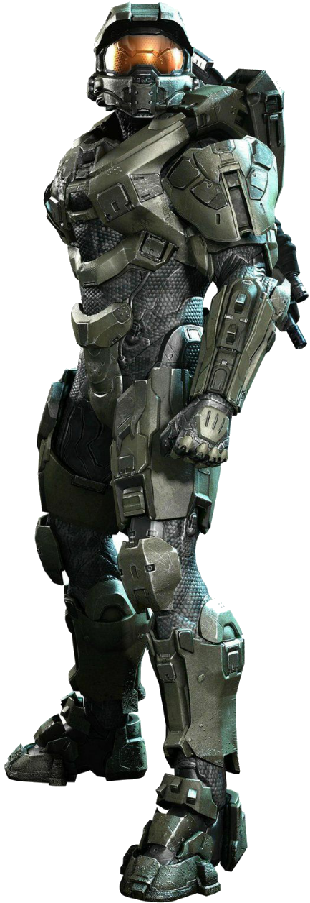
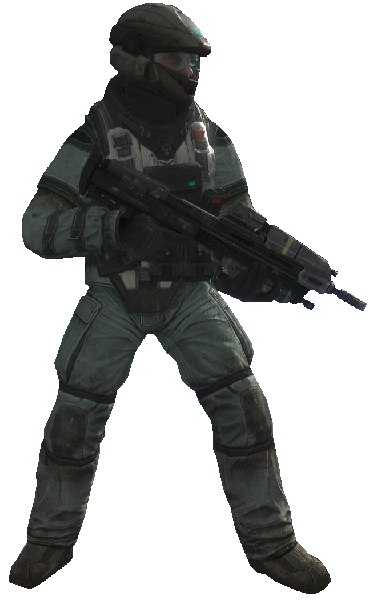
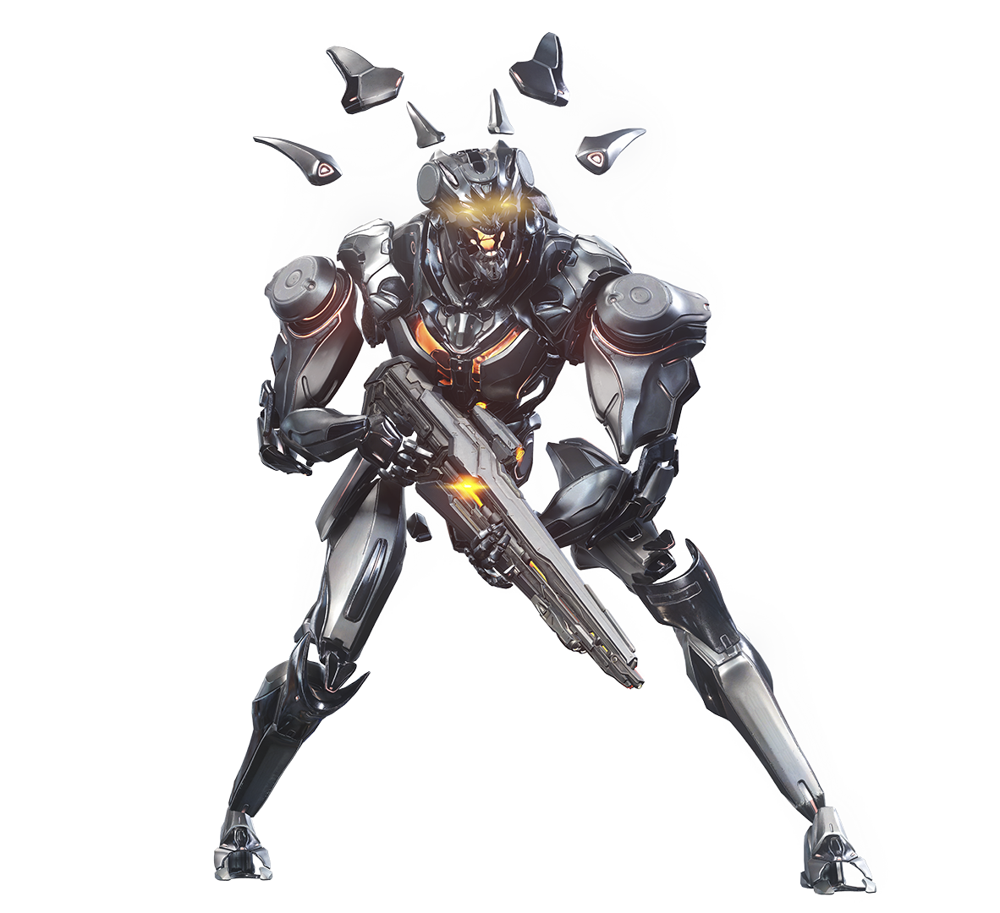
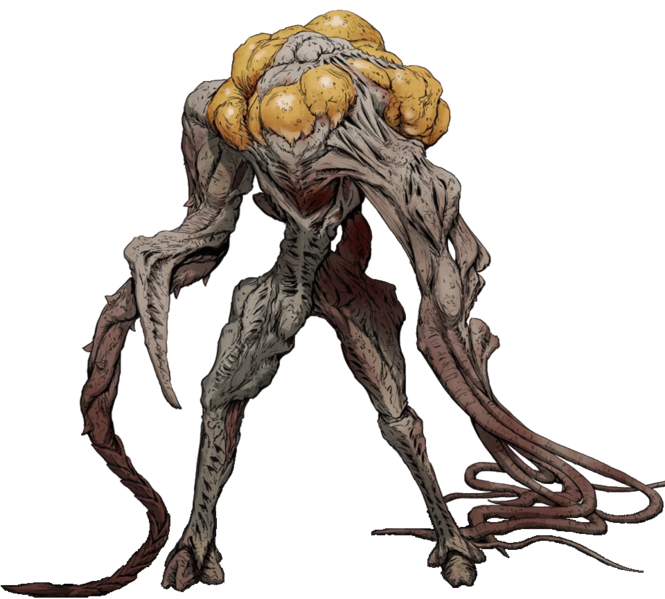

Spartans
Spartan es el término utilizado para describir a los miembros del Proyecto Spartan establecido por el UNSC en varias ocasiones, fueron originalmente creados para combatir la rebelión humana y no al Covenant. Su nombre está basado en la ciudad de la antigua cultura griega, Esparta, por la vida de guerreros que tenían y cómo se seleccionaban, y por su alta capacidad y fuerza que dichos guerreros poseían.
UNSC
El Comando Espacial de las Naciones Unidas [1] o Mando Espacial de las Naciones Unidas es la agencia militar, exploradora y científica del Gobierno Unificado de la Tierra (UEG). Formado en 2163, en un período donde los restos de viejas ideologías culturales se enfrentaban por la supremacía en el Sistema Solar, el UNSC servía principalmente como un observador de operaciones militares en el espacio de las Naciones Unidas.
Covenant
A veces referido como El Pacto o La Alianza, fue una alianza de especies alienígenas originalmente fundada por las especies Sangheili y San 'Shyuum con la esperanza de obtener más conocimiento sobre sus dioses, los Forerunner. Con el tiempo, el Covenant integró a los Lekgolo, los Yanme'e, los Kig-Yar, los Unggoy y los Jiralhanae

Forerunners
Fueron una antigua civilización de habilidosos constructores, brillantes pensadores y audaces guerreros elevados por los Precursores para que les sirvieran como asistentes y ayudantes. Después de la desaparición de los Precursores, los Forerunner tomaron el Manto de Responsabilidad y sirvieron fielmente como mayordomos de toda la vida en la galaxia, aunque su ambición ocasionalmente excedió su juicio. En el apogeo de su poder, miles de millones de naves Forerunner transportaban mercancías y pasajeros entre las estrellas, e imponían su visión de paz en la galaxia
Flood
Designado por los Forerunners como Inferi Redivivus (Latín: Resucitado de los infiernos), o también llamado Parásito por el Covenant, es un organismo parasitario creado hace más de diez millones de años, aparentemente, por los Precursores.
